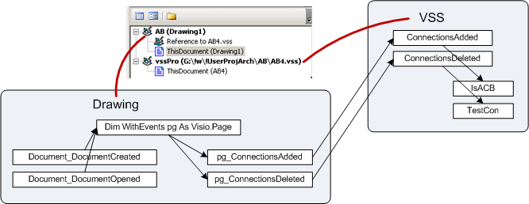
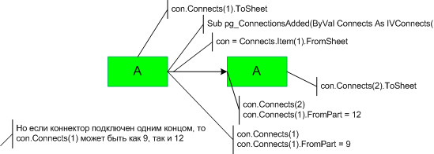

Задача: имеется диаграмма, состоящая из двумерных шейпов, соединенных коннекторами. Диаграмма
должна динамически отображать текущие соединения путем изменения окраски присоединенных шейпов.
Решение реализовано в виде шаблона и трафарета, оба с макросами. В шаблон вынесена не зависящая от
функционала часть. Это минимальные обработчики событий, задача которых - вызвать функциональные
макросы из трафарета.
Трафарет содержит мастер-шейпы и логику изменения окраски. Предполагается, что логика со временем
может изменяться и размещение макросов в трафарете облегчит проведение изменений. Для изменения
достаточно будет просто заменить трафарет. Основной документ остается неизменным.

VBA проект шаблона
Dim WithEvents pg As Visio.Page
Public Sub StartRunMode()
Set pg = ActivePage
End Sub
Private Sub Document_DocumentCreated(ByVal doc As IVDocument)
Set pg = ActivePage
End Sub
Private Sub Document_DocumentOpened(ByVal doc As IVDocument)
Set pg = ActivePage
End Sub
Private Sub pg_ConnectionsAdded(ByVal Connects As IVConnects)
Set con = Connects.Item(1).FromSheet
vssPro.ThisDocument.ConnectionsAdded con
End Sub
Private Sub pg_ConnectionsDeleted(ByVal Connects As IVConnects)
Set con = Connects.Item(1).FromSheet
Set sh = Connects.Item(1).ToSheet
vssPro.ThisDocument.ConnectionsDeleted con, sh
End SubОбработчики DocumentCreated и DocumentOpened создают объект, события которого должны отслеживаться
в процессе работы. При создании файла по шаблону сработает Docu-mentCreated, при последующем
открытии сохраненного документа - DocumentOpened.
Рабочими событиями являются события ConnectionsAdded и ConnectionsDeleted страницы документа Visio.
Эти обработчики назначаются объекту pg, который создается в момент создания или открытия документа.
Если диаграмма размещается на единственной странице документа, то такой подход вполне допустим.
Обработчики принимают параметр Connects, из которого формируются ссылки на шейп коннектора и
присоединенный к нему шейп. Причем в событии ConnectionsDeleted это будет шейп, который был
присоединен до события, но будет отсоединен после него. Шейпы передаются в качестве параметров
обращения в макросы логической части, размещенные в трафарете. Шейп коннектора получается методом
FromSheet, 2D шейп - методом ToSheet объекта Connects.
VBA проект трафарета
Две процедуры (ConnectionsAdded и ConnectionsDeleted) служат приемниками для соответствующих
обработчиков основного документа, а две остальные содержат собственно логику.
Public Sub ConnectionsAdded(ByVal con As Visio.Shape)
If IsACB(con, 1) Then con.Connects(1).ToSheet.Cells("Prop.Color") = 5
End Sub
Public Sub ConnectionsDeleted(ByVal con As Visio.Shape, ByVal sh As Visio.Shape)
TestCon sh 'Near shape
cc = con.Connects.Count
If cc = 1 Then
TestCon con.Connects(1).ToSheet 'Remote shape
End If
End Sub
Private Function IsACB(ByVal con As Visio.Shape, ByVal n As Integer) As Boolean
'con = connector
IsACB = False
If con.Connects.Count = 2 Then
If con.Connects(1).FromPart = 9 Then
Sig = ""
Set m1 = con.Connects(1).ToSheet.Master
If Not m1 Is Nothing Then Sig = Sig & m1.Name
Set m3 = con.Master
If Not m3 Is Nothing Then Sig = Sig & m3.Name
Set m2 = con.Connects(2).ToSheet.Master
If Not m2 Is Nothing Then Sig = Sig & m2.Name
Select Case Sig
Case "ACB", "ADB", "BCA", "BDA":
IsACB = True 'Condition is right
End Select
Else
End If
End If
End Function
Private Sub TestCon(ByVal shp As Visio.Shape)
'Test all connection to shape
Flag = True
For i = 1 To shp.FromConnects.Count
Set con = shp.FromConnects(i).FromSheet
If con.Connects.Count = 2 Then
If con.Connects(1).ToSheet Is shp Then n = 1 Else n = 2 'К проверяемому шейпу подключен
n конец коннектора.
If IsACB(con, n) Then Flag = False
End If
Next
If Flag Then
Set m1 = shp.Master
If Not m1 Is Nothing Then
If StrComp(m1.Name, "A") = 0 Then
shp.Cells("Prop.Color") = 3
Else
shp.Cells("Prop.Color") = 2
End If
End If
End If
End SubПричем логика в данном случае довольно специфична, поэтому ее можно бы и не рассматривать, полезно
только отметить несколько наиболее общих моментов по определению частей коннектора и присоединенных
шейпов. Небольшая шпаргалка:

Если объект con является коннектором, то в его коллекции Connects будет 0, 1 или 2 соединения и
свойство con.Connects.Count вернет 0, 1 или 2.
Сам шейп коннектора можно вычислить по соединению методом FromSheet, то есть
con=Connects.Item(1).FromSheet.
Начало и конец коннектора определяются по значению свойства FromPart. У начала коннектора это будет
9, у конца - 12. Интересна связь между количеством подключений и номером коннекта.
После подключения одним концом con.Connects(1).FromPart может принимать значения: 9, 12. Смотря чем
подключили.
Однако после подключения второго конца con.Connects(1).FromPart всегда 9. То есть при двух
соединениях начало коннектора всегда con.Connects(1). Знание этого факта позволяет несколько
упростить анализ соединения.
Шейпы и точки подключения, к которым подключен коннектор, определяются методами ToSheet и ToPart
соответственно.
Примечание. Особенностью данного решения является то, что подкраска меняется в моменты подключения
или отключения коннектора, причем анализируется только одно звено - коннектор и подключенные шейпы.
Именно эта особенность позволила задействовать анализ, основанный на событиях. Нужно помнить, что
такое решение не годится для случаев, когда требуется анализировать более длинные цепочки
соединений. Там как правило используются либо рекурсивные алгоритмы с последовательным обходом
цепочки, либо рассматривается коллекция Connects страницы.